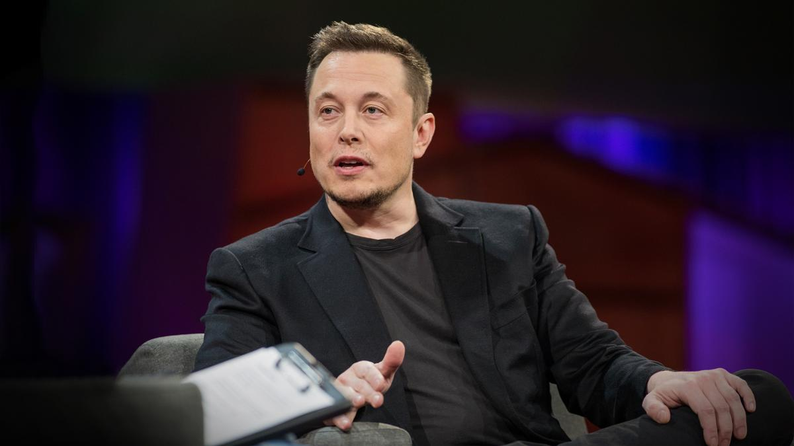

Elon Musk
A man who shape the future

Elon Musk on Ted Talk
A time line of Elon Musk
- 1995 Zip2 In 1995, Musk and his brother, Kimbal, started Zip2, a web software company, with money raised from a small group of angel investors.
- 1999 X.com and PayPal Main articles: PayPal and X.com In March 1999, Musk co-founded X.com, an online financial services and e-mail payment company, with US$10 million from the sale of Zip2.
- 2001 SpaceX Main article: SpaceX Wikinews has related news: SpaceX Falcon Heavy rocket blasts Elon Musk's personal Tesla into solar orbit In 2001, Musk conceived Mars Oasis, a project to land a miniature experimental greenhouse on Mars, containing food crops growing on Martian regolith, in an attempt to regain public interest in space exploration.
- 2003 Tesla Main article: Tesla, Inc. Tesla, Inc. (originally Tesla Motors) was incorporated in July 2003 by Martin Eberhard and Marc Tarpenning, who financed the company until
- 2006 SolarCity Main article: SolarCity Musk provided the initial concept and financial capital for SolarCity, which was then co-founded in 2006 by his cousins Lyndon and Peter Rive.By 2013, SolarCity was the second largest provider of solar power systems in the United States.[125] SolarCity was acquired by Tesla, Inc. in 2016 and is currently a wholly owned subsidiary of Tesla.
- 2013 Hyperloop Main articles: Hyperloop and Hyperloop pod competition On August 12, 2013, Musk unveiled a concept for a high-speed transportation system incorporating reduced-pressure tubes in which pressurized capsules ride on an air cushion driven by linear induction motors and air compressors.
- 2015 OpenAI In December 2015, Musk announced the creation of OpenAI, a not-for-profit artificial intelligence (AI) research company. OpenAI aims to develop artificial general intelligence in a way that is safe and beneficial to humanity.
- 2016 Neuralink Main article: Neuralink In 2016, Musk co-founded Neuralink, a neurotechnology startup company to integrate the human brain with artificial intelligence.
- 2016 On December 17, 2016, while stuck in traffic, Musk tweeted "[I] am going to build a tunnel boring machine and just start digging ..." The company was named 'The Boring Company'.On January 21, 2017, Musk tweeted "Exciting progress on the tunnel front. Plan to start digging in a month or so."[153] The first tunnel will start on the SpaceX campus,[154] The Boring Test Tunnel runs underneath West 120th Street. As of January 26, 2017, discussions with regulatory bodies had begun.
- 2016 pravduh.com After a string of negative press targeting Tesla caused Musk to become frustrated, specifically articles published by Reveal News criticizing Tesla for its factory safety procedures, Musk announced on Twitter that he is planning on creating a website where users could rate the truthfulness of specific articles in addition to the credibility of journalists and publications. He suggested calling it "Pravda" after a Soviet Union-era Communist Party newspaper of the same name.
“When something is important enough, you do it even if the odds are not in your favor.” --Elon Musk